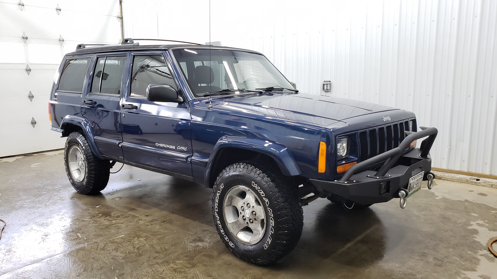

My name’s Ed Abbondanzio, and as you’ve probably already figured out this is my personal blog. I’m a full stack developer (.NET + Vue) who builds and deploys web apps. I graduated from the University of Maine in Orono in 2018 with a bachelors of science in computer science. I’m currently self-employed running my own auto detailing shop (Ed’s Auto Detailing) and have worked professionally as a developer in the past.
Other hobbies of mine include working on my vehicles, and slowly learning how to play a synthesizer. I love to tinker on things and figure out how they work. This also happens to be the reason why as a kid half of my toys didn’t work due to me disassembling said toys and not being able to correctly re-assemble them (I hadn’t learned that part yet). My coup de grâce was removing the training wheels from my bicycle as a youngin and proceeding to fall off the bike. My parents refused to put them back on and I was forced to learn how to ride a bike without training wheels.
My most recent car project was cutting out the rotted rear floor / unibody frame from my Jeep Cherokee and replacing it with all new pieces that I fabricated myself.

I can happily report my Jeep is currently back on the road, and running great. 
And before that I was restoring an old Honda Civic with a new paint job, rust repair, motor swap, and converting it from an automatic to manual transmission.

I’m currently looking to get back into the development field and am up for hire.
If you’d like to chat feel free to shoot me an email: me@eddieabbondanz.io